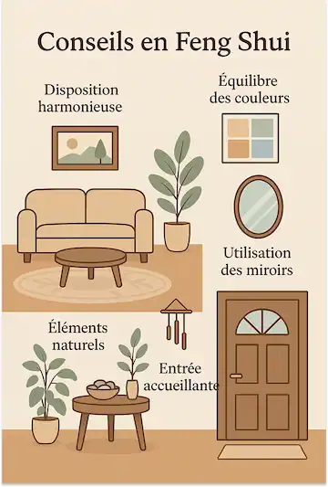
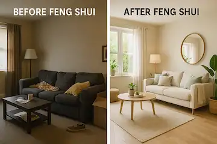
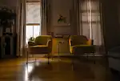
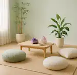

Le Feng Shui est la discipline qui vise à harmoniser l'énergie d'un lieu de vie ou de travail. En rééquilibrant l'espace, on améliore naturellement le bien-être, la vitalité et la qualité de vie de ses occupants. Cette prestation s'adresse à toute personne souhaitant améliorer son bien-être chez soi, mais aussi aux thérapeutes, entrepreneurs, indépendants ou familles.




Nous commençons par une discussion pour identifier vos besoins, vos ressentis dans le lieu, et vos attentes (sommeil agité, tensions dans une pièce, fatigue inexpliquée, etc.).
À distance (à partir d'un plan et de photos) ou sur place, j'identifie les perturbations énergétiques :
Je vous propose des ajustements simples et accessibles selon les principes du Feng Shui :
L'énergie du lieu est fluidifiée grâce à des gestes, sons ou intentions qui favorisent la paix, la clarté et la vitalité dans l'espace.
Vous recevez un compte-rendu avec des conseils pratiques à mettre en œuvre à votre rythme.


Offrez équilibre et harmonie à votre espace ! Optimisez l'énergie de votre maison ou de votre lieu de travail grâce à une Consultation Feng-Shui personnalisée. Harmonisez votre environnement, améliorez le flux énergétique et créez un espace favorable à votre bien-être et votre sérénité.
La prestation comprend :
Les règlements peuvent s'effectuer en espèces ou par carte bancaire.
Prenez soin de votre espace dès aujourd'hui et réservez votre consultation pour retrouver harmonie et sérénité.